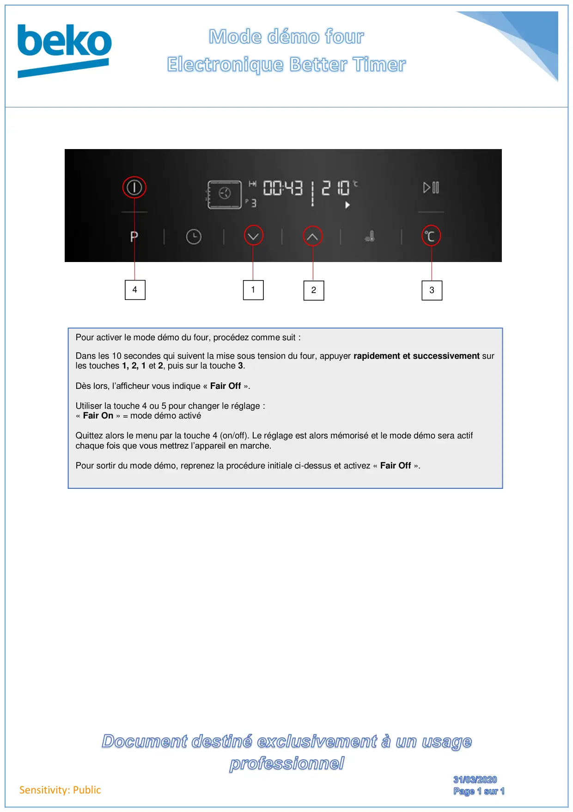

Mode démo four Better timer

Sensitivity: PublicPour activer le mode démo du four, procédez comme suit :Dans les 10 secondes qui suivent la mise sous tension du four, appuyer rapidement et successivement surles touches 1, 2, 1 et 2, puis sur la touche 3.Dès lors, l’afficheur vous indique « Fair Off ».Utiliser la touche 4 ou 5 pour changer le réglage :« Fair On » = mode démo activéQuittez alors le menu par la touche 4 (on/off). Le réglage est alors mémorisé et le mode démo sera actifchaque fois que vous mettrez l’appareil en marche.Pour sortir du mode démo, reprenez la procédure initiale ci-dessus et activez « Fair Off ».1324
1 / 1